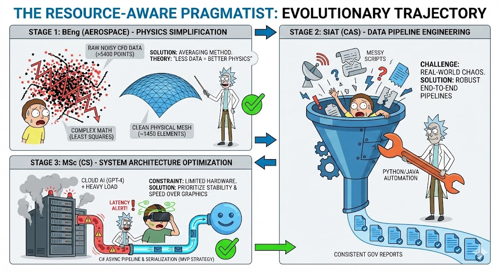
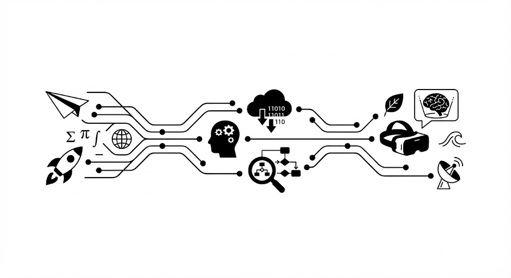

For me, building systems that connect data, models and people feels very similar to designing an aircraft or a complex structure: you have to think carefully about every component, how they interact, and how to keep the whole system simple, stable and trustworthy.
About Myself
I am Ruxuan Wang. I hold an MSc in Information Technology from the University of Glasgow and a BEng in Aerospace Engineering from Dalian University of Technology. My background is a mixture of engineering and computing: I started from aerodynamics, structures and flight vehicle design, and then moved towards software engineering, data analysis, and applied machine learning.
During my BEng, my thesis focused on shock wave detection in compressible flows. I implemented a C++ post-processing pipeline that could detect and reconstruct shock structures from CFD results, turning scattered indicators into continuous shock surfaces suitable for engineering analysis and visualization.
In my MSc, I shifted to computing more directly. My thesis explored how extended reality (XR), 3D avatars and large language models can be used for language learning. I built a VR prototype on the Meta Quest 2 using Unity, integrating GPT-based dialogue and Azure speech services to create an immersive multilingual practice environment where users can interact with an AI-driven avatar in English, Chinese and Japanese.
I also spent time as a Graduate Research Assistant at the Shenzhen Institute of Advanced Technology, Chinese Academy of Sciences, where I worked on environmental monitoring and remote sensing related projects. There I became more familiar with processing large, noisy datasets and turning scripts into reproducible analysis pipelines that other researchers can reuse.
Alongside technical work, I have been active in student representation and Model United Nations communities, taking roles such as student representative, conference organiser and chair. These experiences trained my skills in communication, writing and working with international, interdisciplinary teams.
My Research Interests

My research interests lie at the intersection of computing, engineering and human learning. In one sentence, I enjoy designing and improving systems that turn complex data and interactions into something more intuitive and useful for people. More specifically, they include (but are not limited to):
Extended Reality (XR) and 3D avatars for language learning and human–computer interaction.
Large language models and prompt engineering for educational and scientific applications.
Machine learning pipelines for scientific, geospatial and engineering datasets, with an emphasis on robustness and interpretability.
Aero-structural and fluid modelling, and how classical simulation and modern data-driven methods can complement each other.
Do I Really Love My Research Direction?

When I was younger, I was fascinated by aircraft and space, and naturally imagined myself working in something related to aviation. Studying Aerospace Engineering gave me a strong foundation in physics, mathematics and modelling, but over time I realised that what I enjoyed most was not a single “industry label”, but the process of connecting theory, simulation and real data into working systems.
That thought gradually pulled me towards computing and data. I became more interested in how software, algorithms, and now large language models can sit on top of physical and social systems to make them easier to understand and interact with. Building a VR language learning system and working with environmental and remote sensing data both reinforced this feeling: I like being at the boundary where humans, data and models meet.
For me, my current direction is a natural continuation of this path. XR and LLMs give us new ways to build interfaces; scientific and engineering data give us meaningful problems; and good system design tries to keep everything as simple and reliable as possible behind the scenes. I do not see this as a fixed end point, but as a long-term journey where my engineering background and computing skills keep evolving together.
Fun Facts
I originally trained as an aerospace engineer, so I still get excited whenever I see aircraft, rockets, or even a nicely designed structural model in a simulation tool.
I enjoy learning languages and working in international environments. English and Chinese are my main working languages, and I have also studied other languages to different levels.
I like projects where I can combine several tools together – for example, connecting Unity, cloud APIs and AI models – and then slowly simplifying the whole pipeline until it is easy for other people to use.
I have spent time in both engineering labs and computing labs, and I like how these different cultures think about “experiments”: one with hardware and physical prototypes, the other with code, data and logs.
I enjoy travelling, taking photos of cities and landscapes, and quietly observing how people live and communicate in different places.
I am sometimes too idealistic about how technology should serve people, but that idealism keeps me motivated when a system breaks for the fifth time in one night.
I always like to keep a balance between structure and flexibility: I plan carefully, but I also leave space for interesting side projects and unexpected opportunities.